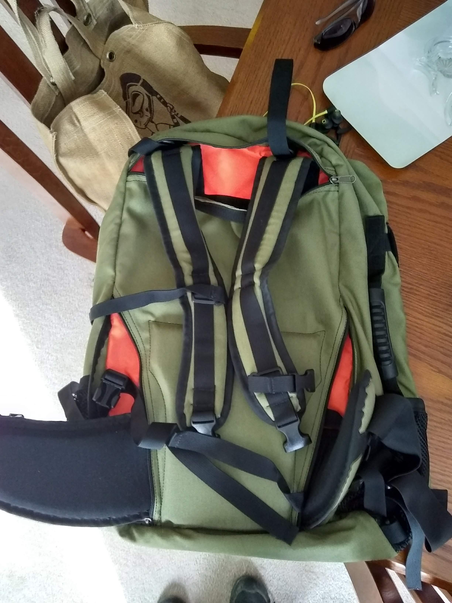
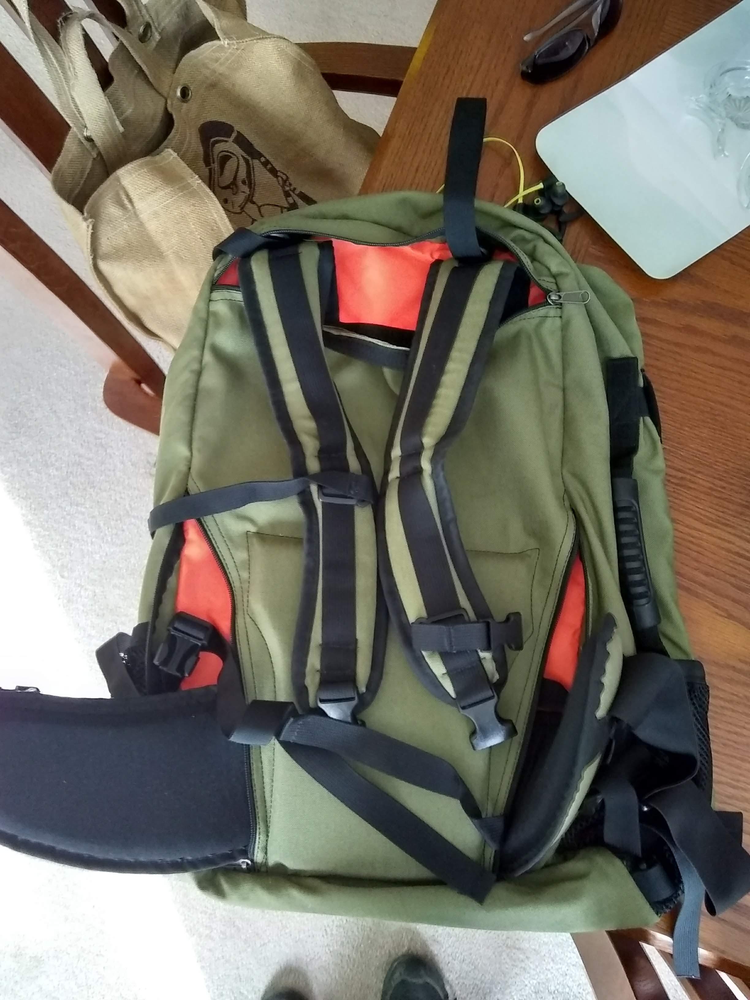

Table of Contents
Hiking
Kelly liked Thru-Hiker (forums http://thru-hiker.com/x/index.php/forums and good articles: http://thru-hiker.com/articles/) and outdoor gear lab: https://www.outdoorgearlab.com/ for detailed reviews of new bags. But doesn't seem like onebag.com.
Checklist
- Water filter. Pack >4L per day if you don't have a water refill spot
- Plenty of food
- Athletic tape stocked up
- Sunscreen and hand sanitizer refilled
Backpack
Needs
- Full hip / waist strap
- At least 3 liters of water weight
- Waterproof is nice.
- External water bottle pockets, for when you don't want to use a bladder. Probably useful in city context, but won't bring full backpack either
- Accessible main compartment. Not just a zipper on the top, I want to be a mostly full zip or accessible from bottom too.
- >= 30L for actual camping uses. But still small enough as carry-on
Not sure
- Rain cover?
- Extra lash loops? Still need to learn some good knots.
Don't need
- Specific back ventilation, just undo the shoulder straps a bit for same effect. All your weight is on your hip. Also apparently doesn't help anyways, you'll still get sweaty.
- Water port, necessarily. Can just move zippers to side and open slightly and tie together with twist tie.
Evaluations
Gregory and even dakine lo
Peach airlines has 15lb limit to carry-ons, and 115cm total dimensions.
MEI Voyageur
MEI will do custom stuff for their Voyageur bags and other stuff. Makes it look half decent too!
 and . However still 45L and quite large if you only have a small amount of stuff.
and . However still 45L and quite large if you only have a small amount of stuff.
{kind=link}
Emergency Communication / Beacon
SPOT is expensive, $150 a year or something.
Inreach is cheaper, pay os you go is like $20/month.
Likely we'll be in cell range on the part that we're hiking in on mt hood.
What about bringing a radio and doing 700mhz bands? Maybe ask a park ranger on the phone.
- Looks like Oregon is doing digital, P25. http://library.state.or.us/repository/2012/201204161146171/index.pdf. Commercially $2K per radio, but can get Whistler WS1040 scratch and dent for $130. https://whistlergroup.com/collections/scratch-dent/products/scratch-dent-ws1040
- Another option is a Ham radio license, which comes in handy anyways. Great study at hamstudy.org.
- Technician, general, extra
- YAESU, is uhf vhf. Ft-70D
- You can find the repeaters on most summits. App is repeater book.com
- Summits on the Air
Hiking Poles
Hiking poles… Checked luggage…
- Just leave them in Japan if it costs extra money to buy luggage going to Korea. Yep! $15 or something, each way. (probably will, knowing your flight schedule). But…do you want to hike in Korea? Mmmm…figure it out as gets closer.
One person asserts that if you tear down the poles and have the TSA agents inspect the inside, then you're usually good. Maybe call TSA today? No easy way to talk to human. Check for now, but then just ask them as you're going through the lines. Get a feel for it in the future.
Water
I really like the cheapness, ease of finding a replacement, and reliability of soda/sports bottles, but like moving on the trail and not taking breaks for getting out water bottle.
But having water bottle on side of bag (in sun) doesn't keep it cool in extreme conditions.
Just try the bladder out, see if it's significantly better. Also depends on whether backpack has water bottle holders
- Can use crumpled paper to force vertical weight distribution of water. But I feel like it won't matter, if all weight is transferred to hips. Ahh…center of gravity.
Bladder
Seem to not break that much. Surround with garbage bag just in case.
Bite valve will break down over time, but you can just use a clothespin or binder clip too. They don't work, hosing is tough. Thankfully just sucking a few seconds works fine.
Laptop insulated area serves well for keeping bladder insulated too.
Don't really need water bottle 3“ unscrew head. Just opening the full head.
Inspecting
- Seal around edges is a consistent ~1/4 inch.
- Decent flow rate. Can just take the bite valve off.
I am getting suckered into paying $40 for this design (Platypus Big Zip Water Reservoir for Hydration Backpacks, 3-Liter, EVO with Fast Flow Valve)
{kind=link}
= Pro =
- Easy to repair / get replacement parts, just easily pulled off tubing with barbed ends and replaceable sub-parts.
- No dumb water bottle top. Also, includes a top opening in case you find a spigot.
= Meh =
- Easy to attach drinking end to Sawyer water filter end. No big benefit over water bottles.
= Con =
- Is this really better than cheap water bottles? For cheap airlines with no luggage, it collapses flat and allows more room for clothes and stuff.
Sandals
love Decathlon sandals, the cheap ones. They are sturdy, firm, grippy. Full rubber on bottom, and $15 regular price. Hard to beat.
- Dirt colored

- The straps came out of the sole occasionally with plenty of warning, but were easily stuck back in with some Shoe Goo / rubber cement and kept on trucking.